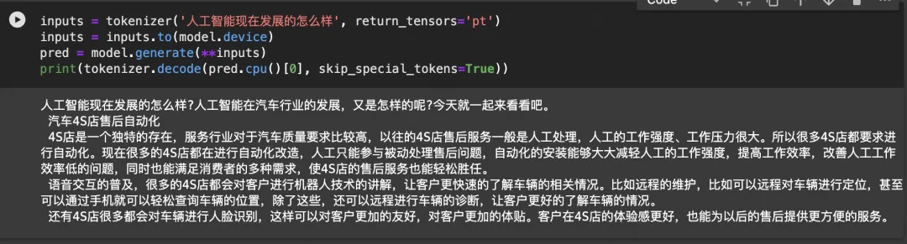
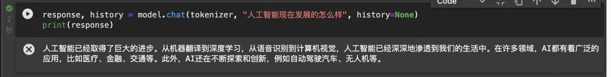
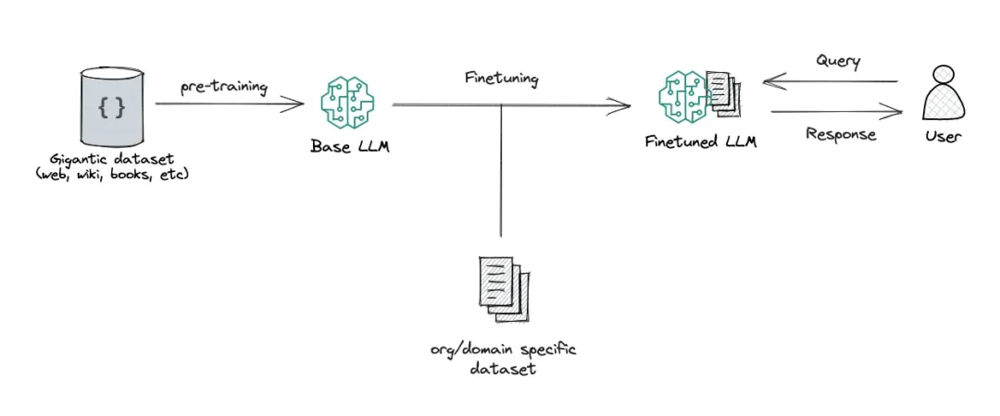
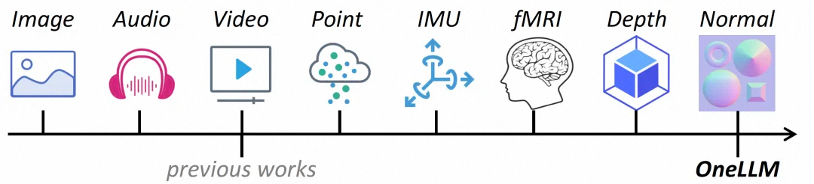
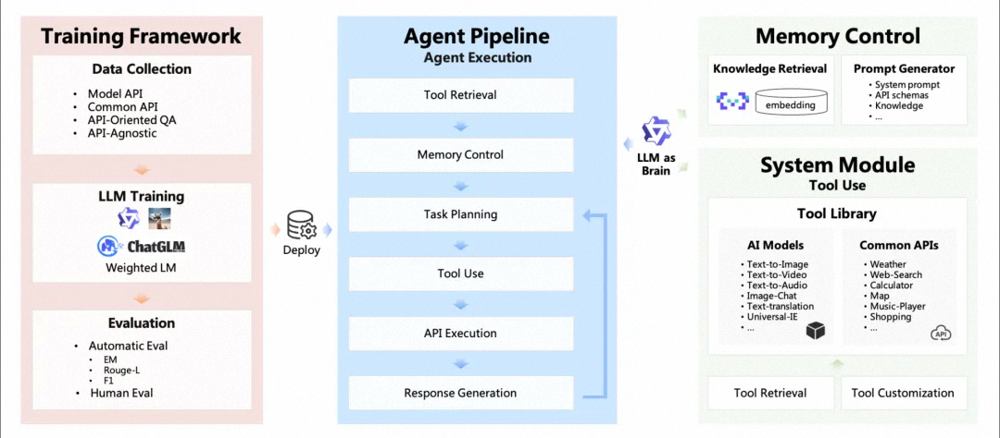
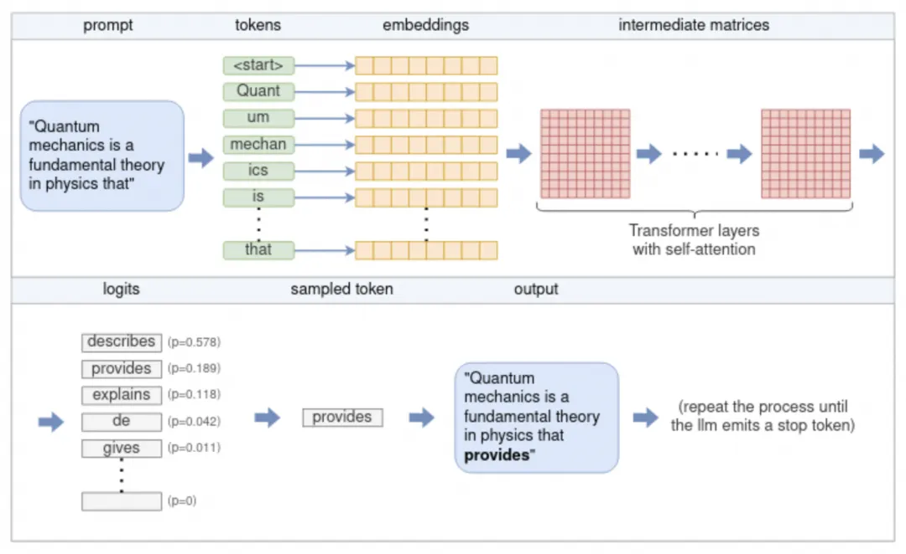
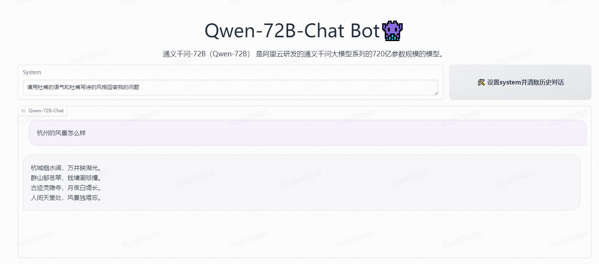
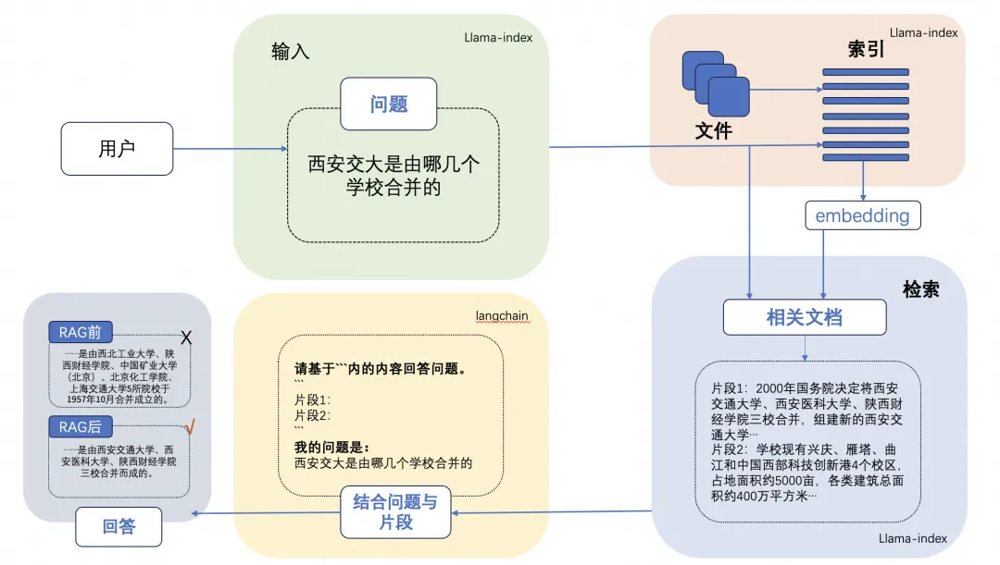
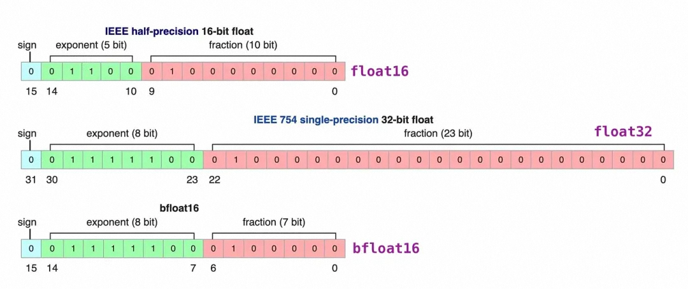
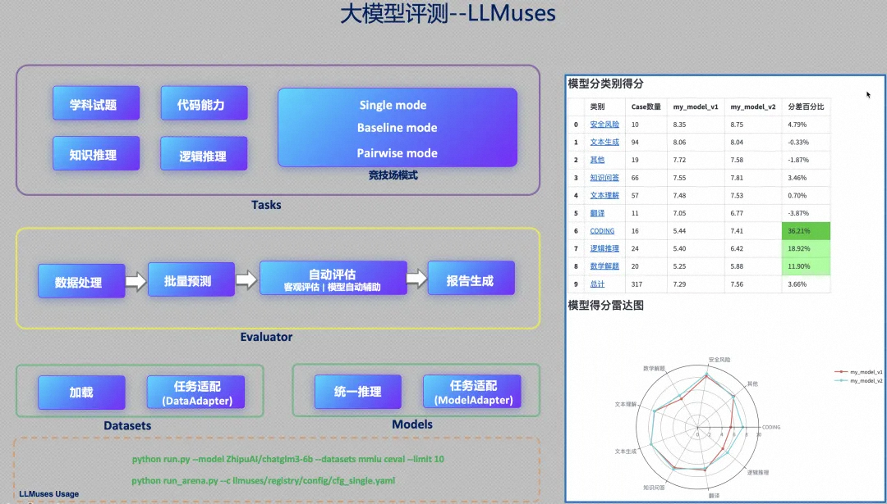

LLM 学习笔记：核心概念与实践方法
参考：https://www.nowcoder.com/discuss/618031032440217600?sourceSSR=dynamic
1. 大语言模型基础
1.1 什么是 LLM
大语言模型（Large Language Model，LLM）是基于海量文本数据训练的大规模神经网络，通常包含数十亿到数千亿参数。其核心能力源于 Transformer 架构和自回归生成方式：通过预测文本序列中的下一个词来学习语言的统计规律和世界知识。
1.2 Base 模型 vs. Chat 模型
-
Base 模型（基础模型）
在海量、多样化的纯文本语料上进行训练，目标是最小化下一个词的预测误差。它本质上是一个“文本续写器”，生成的后续内容并不一定遵循对话或指令格式。例如，给它输入“你好，我”，它可能补全“是一个学生”，而不是回答“有什么可以帮您”。
-
Chat 模型（对话模型）
在 Base 模型的基础上，使用大量“用户指令-理想回复”的对话数据进行有监督微调（Supervised Fine-Tuning, SFT），并可能通过强化学习（如 RLHF） 进一步优化。这使得 Chat 模型能够理解指令并以助手身份进行多轮对话，输出更符合人类期望的内容。

补充解释：
- 有监督微调（SFT）：这是一种用标注好的数据来调整模型的方法。这里的数据是“（用户指令，正确的回复）”这样的配对。模型在预训练（Base模型）已经学会语言的基础上，通过对比自己的输出和标准答案的差异，逐步调整参数，使得对于新指令也能生成类似风格的回复。可以理解为“模仿老师给出的标准答案”。
- 强化学习（RLHF，Reinforcement Learning from Human Feedback）：在 SFT 之后，模型可能仍会生成一些不安全或不理想的回复。RLHF 引入一个“奖励模型”，它由人类对大量不同回复的偏好打分训练而来。然后，LLM 通过尝试生成回复，并根据奖励模型给出的分数进行优化，学会更符合人类偏好的行为（例如更有用、更无害）。可以理解为“通过奖惩机制让模型自己摸索出更好的回答策略”。
1.3 多模态模型
多模态 LLM 同时处理文本和其他模态信息（图像、音频、视频）。通过在多种类型的数据上联合训练，模型能够学习不同模态之间的对齐关系，从而完成单文本模型无法实现的任务，例如：图片描述生成、根据视频内容回答问题、从音频中提取信息等。

1.4 Agent（智能体）模型
以 LLM 为核心的智能体系统通过集成以下组件来执行复杂任务：
- 规划：将复杂目标拆解为可执行的子任务，并支持反思和纠错。
- 记忆：包括利用上下文窗口的短期记忆，以及通过向量数据库等外部存储实现的长期记忆。
- 工具使用：模型学习调用外部 API 或工具（如搜索引擎、计算器、代码解释器）来扩展能力。

1.5 Code 模型
Code 模型在预训练和指令微调阶段显著增加了代码数据的占比。因此，它们在代码相关任务上表现优异，如代码生成与补全、代码纠错、根据自然语言描述完成编程任务。部分模型还针对特定语言（Python、Java 等）进行了专门优化。
2. 使用 LLM 及优化输出效果
2.1 模型推理（文本生成）
什么是模型推理？
模型推理是指利用已经训练好的模型，根据输入（如提示词）来生成新内容的过程。在这个阶段，模型参数不再更新，只进行前向计算。你可以把它理解为“模型在回答问题时的工作状态”。
自回归生成的核心步骤（下图中的流程）：

- 分词：分词器将输入文本拆分为模型词汇表中的 token，每个 token 对应一个唯一 ID。
- 嵌入：每个 token ID 被转换为稠密的 embedding 向量，所有向量组成输入矩阵。
- Transformer 处理：输入矩阵经过多层 Transformer 网络，每层都包含自注意力机制和前馈网络，用于捕捉序列中 token 之间的依赖关系。
- 生成 Logits：最后一层输出经过线性变换得到 logits 向量，每个值表示对应 token 成为“下一个词”的得分。
- 采样：采用某种采样策略（如贪心、Top-K、Top-p）从 logits 中选择一个 token 作为本次生成的输出。
- 迭代：将新生成的 token 追加到输入序列末尾，重复步骤 1-5，直到生成结束符或达到最大长度。
更通俗的理解：模型一次只预测下一个最合适的词，然后把这个词加进去，再预测下一个，如此反复，像打字一样一句一句写完。
2.2 提示词（Prompt）
提示词是与 LLM 交互的主要方式。通过精心设计的输入，我们可以引导模型生成期望的内容。许多开源模型支持 System Prompt（系统提示），用于设定模型的角色、行为准则和输出格式，提供更精细的控制。

2.3 少样本提示（Few-shot Prompt）
Few-shot Prompt 与普通 Prompt 的区别：
- 普通 Prompt（零样本，Zero-shot）：直接给出任务描述，不带示例。例如：“将以下句子翻译成英文：你好”。
- Few-shot Prompt：在任务描述后，额外提供几个“输入→输出”的例子，让模型通过类比学习。例如：“翻译：你好→Hello；谢谢→Thank you；再见→Goodbye；然后给出新输入‘对不起’”。示例越多，模型通常表现越好，但会消耗更多 token 和计算资源。
2.4 检索增强生成（RAG）
LLM 存在幻觉、知识过期、推理过程不透明等缺点。RAG 通过在生成答案前，从一个外部知识库（如企业文档、向量数据库）中检索与问题相关的信息，并将这些信息作为上下文增强提示词，从而让模型基于可靠事实生成回答。这能有效提高准确性并实现知识的动态更新。

2.5 模型微调
微调是在预训练模型的基础上，使用特定领域或任务的数据继续训练，更新模型权重。它能使模型获得新知识或改变其行为风格。
模型微调 vs. 模型推理：
- 模型微调：发生在训练阶段，需要标注数据和计算资源，目的是改变模型参数以适应特定任务。
- 模型推理：发生在模型训练完成后的使用阶段，不改变参数，只进行前向计算以生成答案。
与 Few-shot Prompting 的对比：
- 微调会永久改变模型，推理时无需携带示例，因此不增加 token 消耗，响应速度更快，也不受上下文窗口限制。
- 但微调需要构建训练数据、消耗计算资源，且可能导致模型在通用任务上的能力下降，需要进行全面评估。
高效微调方法（如 LoRA、QLoRA）显著降低了硬件门槛，允许在消费级 GPU 上微调百亿参数模型。

2.6 模型量化
模型量化将模型中的权重和激活值从高精度（如 32 位浮点数，FP32）转换为低精度（如 8 位整数，INT8）表示。
- 优点：大幅减少模型体积和内存占用，降低推理计算量，使得模型可以在资源受限的设备（如个人电脑、移动端）上运行。
- 缺点：可能带来一定的精度损失。
常用的量化工具包括 bitsandbytes (bnb)、GPTQ、AWQ 等。

2.7 模型评估
评估 LLM 需要从多个维度进行，包括文本对话、生成质量、多模态、安全、专业技能（编程/数学）、知识推理等。
评估方法分为两大类：
- 人工评估：由人类专家打分，结果可靠但成本高。
- 自动评估：
- 基于规则：适用于有标准答案的客观题。
- 基于模型：使用一个强大的“专家模型”来评价目标模型的输出，适用于主观题。

2.8 模型推理加速与部署
模型推理加速 vs. 模型推理：
- 模型推理：指生成答案的过程本身。
- 模型推理加速：指采用各种技术手段（如更高效的注意力实现、量化、批处理、KV 缓存等）来加快推理过程，降低延迟或提高吞吐量，而不改变推理结果的正确性。
将 LLM 投入生产需考虑部署方案和推理速度。目前常见的工具有：
- vLLM：通过优化的显存管理和连续批处理技术，大幅提升推理吞吐量。
- FastChat：提供分布式多模型部署框架，支持 Web UI 和 OpenAI 兼容的 API。
- Xinference：支持在 CPU 或 GPU 上部署量化模型，兼容多种硬件。
- 云服务托管：各大云厂商提供模型托管服务，支持弹性伸缩的 API 接口。
附：模型推理所处的阶段
模型推理属于“训练后”的使用阶段，与训练（包括预训练、微调等）完全不同：
- 预训练：从随机参数开始，在海量数据上学习通用语言知识（需要大量 GPU 和数月时间）。
- 微调：在预训练模型基础上，用特定数据继续更新参数（需要数小时到数天）。
- 推理：模型参数固定，只进行前向计算以生成答案（毫秒到秒级）。所有与 ChatGPT、Claude 等对话的过程，都属于推理阶段。